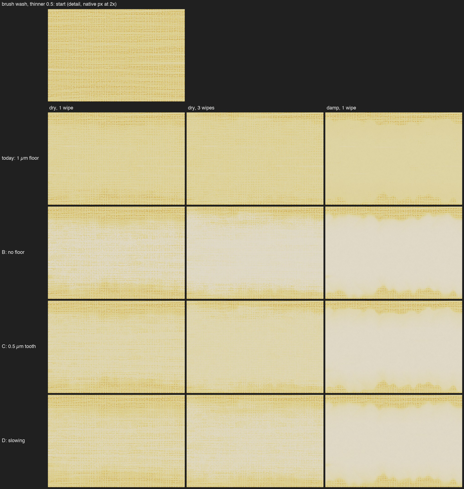
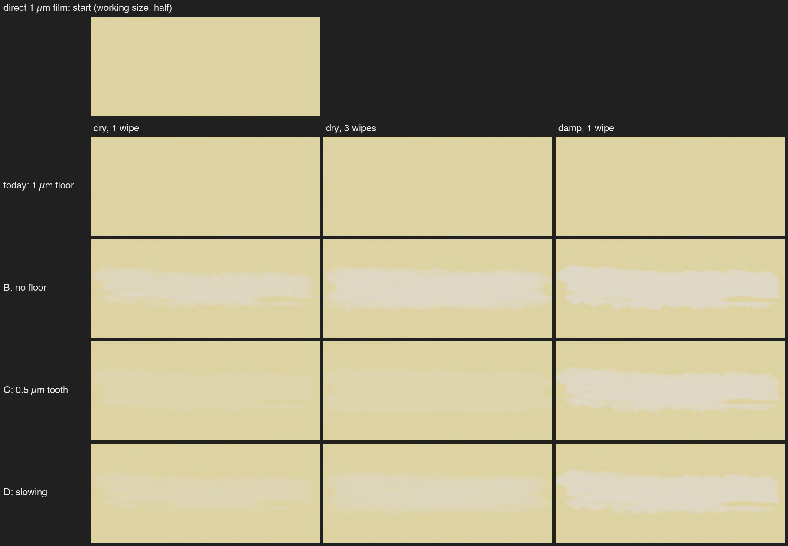
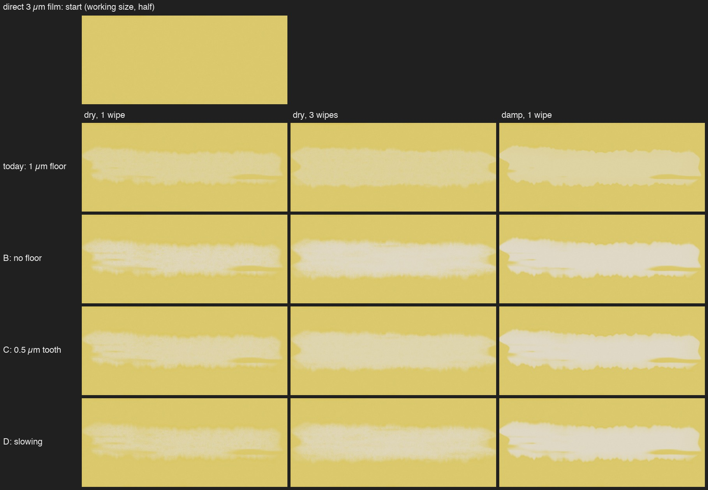

Same canvas (2400 px, 440 mm, linen 15 threads/cm, thin ground), raw sienna, same path, seed and pressure 0.8; damp = dipped 0.5. Rows: today's 1 µm floor; B no floor; C a 0.5 µm tooth that only spirits lift; D removal slowing as the film thins (half speed at 1 µm dry), spirits shrink the slowing. Working size is the painted area at half size; detail is native pixels at 2x.



"plateau" = share of pixels on the most common value (0.02 µm bins).
rag::tests::thin::experiment, 2400 px, engine 3, linen 15 threads/cm; film left (µm) in the wipe's middle === film1: start p5 1.00 p25 1.00 p50 1.00 p75 1.00 p95 1.00 plateau 100% Floor dry1: -0.0% off, p5 1.00 p25 1.00 p50 1.00 p75 1.00 p95 1.00 plateau 100% (bal 2e-11) Floor dry3: -0.0% off, p5 1.00 p25 1.00 p50 1.00 p75 1.00 p95 1.00 plateau 100% (bal 1e-10) Floor damp1: -0.0% off, p5 1.00 p25 1.00 p50 1.00 p75 1.00 p95 1.00 plateau 100% (bal 2e-11) Zero dry1: 78.6% off, p5 0.01 p25 0.01 p50 0.04 p75 0.47 p95 0.59 plateau 28% (bal 1e-9) Zero dry3: 93.9% off, p5 0.00 p25 0.00 p50 0.00 p75 0.12 p95 0.23 plateau 63% (bal 1e-9) Zero damp1: 99.0% off, p5 0.00 p25 0.00 p50 0.00 p75 0.00 p95 0.02 plateau 93% (bal 6e-9) Fixed dry1: 31.3% off, p5 0.50 p25 0.50 p50 0.50 p75 1.00 p95 1.00 plateau 62% (bal 8e-10) Fixed dry3: 31.5% off, p5 0.50 p25 0.50 p50 0.50 p75 1.00 p95 1.00 plateau 62% (bal 9e-10) Fixed damp1: 94.8% off, p5 0.02 p25 0.02 p50 0.03 p75 0.05 p95 0.14 plateau 42% (bal 5e-9) Soft dry1: 48.0% off, p5 0.30 p25 0.31 p50 0.37 p75 0.80 p95 0.85 plateau 33% (bal 4e-9) Soft dry3: 68.2% off, p5 0.12 p25 0.13 p50 0.17 p75 0.57 p95 0.67 plateau 25% (bal 6e-9) Soft damp1: 93.3% off, p5 0.04 p25 0.05 p50 0.05 p75 0.06 p95 0.13 plateau 60% (bal 9e-9) === film3: start p5 3.00 p25 3.00 p50 3.00 p75 3.00 p95 3.00 plateau 100% Floor dry1: 53.8% off, p5 1.00 p25 1.00 p50 1.00 p75 2.00 p95 2.00 plateau 60% (bal 1e-9) Floor dry3: 54.3% off, p5 1.00 p25 1.00 p50 1.00 p75 2.00 p95 2.00 plateau 62% (bal 2e-9) Floor damp1: 66.2% off, p5 1.00 p25 1.00 p50 1.00 p75 1.00 p95 1.01 plateau 95% (bal 7e-9) Zero dry1: 78.8% off, p5 0.03 p25 0.03 p50 0.11 p75 1.41 p95 1.78 plateau 21% (bal 1e-8) Zero dry3: 94.0% off, p5 0.00 p25 0.00 p50 0.00 p75 0.35 p95 0.70 plateau 61% (bal 1e-8) Zero damp1: 99.0% off, p5 0.00 p25 0.00 p50 0.00 p75 0.00 p95 0.05 plateau 88% (bal 2e-8) Fixed dry1: 70.0% off, p5 0.50 p25 0.50 p50 0.50 p75 1.41 p95 1.78 plateau 58% (bal 2e-8) Fixed dry3: 77.1% off, p5 0.50 p25 0.50 p50 0.50 p75 1.00 p95 1.00 plateau 62% (bal 3e-8) Fixed damp1: 97.5% off, p5 0.02 p25 0.03 p50 0.03 p75 0.06 p95 0.19 plateau 47% (bal 3e-8) Soft dry1: 62.7% off, p5 0.43 p25 0.45 p50 0.61 p75 2.00 p95 2.24 plateau 22% (bal 2e-8) Soft dry3: 80.9% off, p5 0.13 p25 0.15 p50 0.21 p75 1.12 p95 1.46 plateau 22% (bal 2e-8) Soft damp1: 96.9% off, p5 0.05 p25 0.05 p50 0.05 p75 0.07 p95 0.18 plateau 37% (bal 4e-9) === wash05: start p5 1.19 p25 2.12 p50 2.91 p75 3.73 p95 4.73 plateau 1% Floor dry1: 53.6% off, p5 1.00 p25 1.00 p50 1.00 p75 2.00 p95 2.17 plateau 58% (bal 1e-8) Floor dry3: 54.8% off, p5 1.00 p25 1.00 p50 1.00 p75 2.00 p95 2.00 plateau 60% (bal 2e-8) Floor damp1: 65.6% off, p5 1.00 p25 1.00 p50 1.00 p75 1.00 p95 1.01 plateau 93% (bal 2e-8) Zero dry1: 78.9% off, p5 0.02 p25 0.03 p50 0.11 p75 1.18 p95 2.17 plateau 21% (bal 2e-8) Zero dry3: 94.0% off, p5 0.00 p25 0.00 p50 0.00 p75 0.33 p95 0.75 plateau 61% (bal 4e-8) Zero damp1: 99.1% off, p5 0.00 p25 0.00 p50 0.00 p75 0.00 p95 0.04 plateau 88% (bal 6e-9) Fixed dry1: 69.3% off, p5 0.50 p25 0.50 p50 0.50 p75 1.18 p95 2.17 plateau 58% (bal 1e-8) Fixed dry3: 76.6% off, p5 0.50 p25 0.50 p50 0.50 p75 1.00 p95 1.00 plateau 62% (bal 2e-8) Fixed damp1: 97.5% off, p5 0.02 p25 0.03 p50 0.03 p75 0.06 p95 0.19 plateau 47% (bal 8e-8) Soft dry1: 63.0% off, p5 0.35 p25 0.45 p50 0.59 p75 1.69 p95 2.77 plateau 6% (bal 3e-9) Soft dry3: 81.0% off, p5 0.13 p25 0.15 p50 0.21 p75 1.03 p95 1.58 plateau 18% (bal 4e-9) Soft damp1: 96.9% off, p5 0.05 p25 0.05 p50 0.05 p75 0.07 p95 0.18 plateau 39% (bal 3e-8)